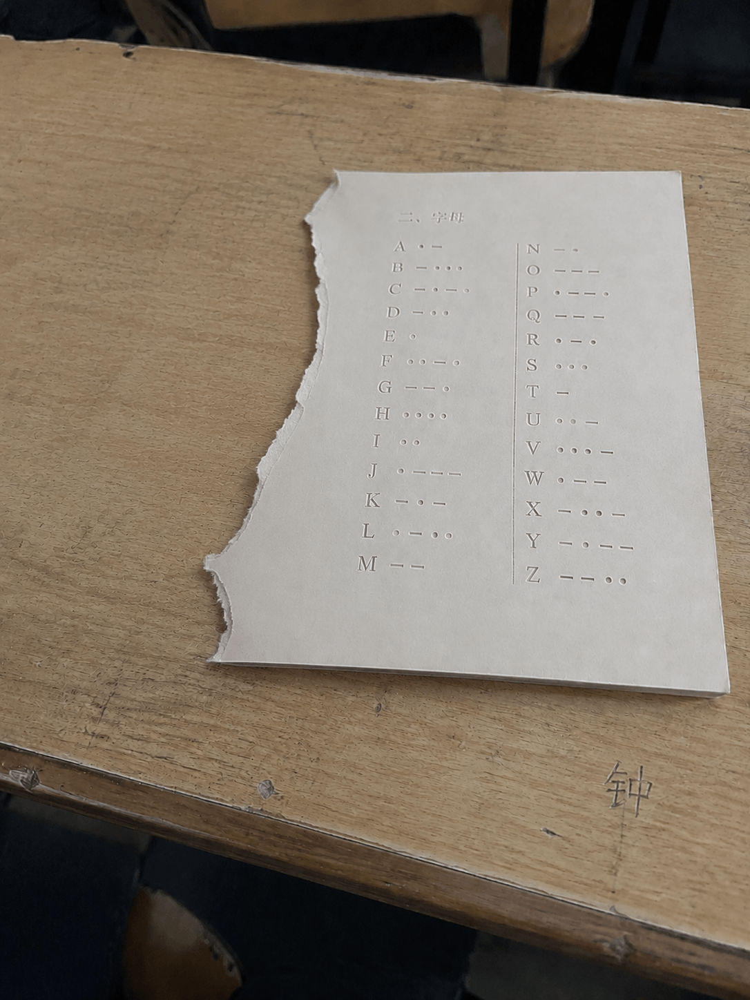

《墙壁里有虫子》
DATE: 2006-03-01 / TIME: 02:14 AM
墙壁里有心跳声。不对，是牙齿咀嚼的声音。
我明明已经把玻璃罐里的眼珠都捣碎了，可它们还是能看见我。长短不一的黑色虫子，从木地板的缝隙里排着队爬出来，它们在我的草稿纸上咬出了一个个小洞。
它们说，只要读懂这些长长短短的骨头，坏掉的人偶就能重新缝合。
别出声。门外有东西在呼吸。
我明明已经把玻璃罐里的眼珠都捣碎了，可它们还是能看见我。长短不一的黑色虫子，从木地板的缝隙里排着队爬出来，它们在我的草稿纸上咬出了一个个小洞。
它们说，只要读懂这些长长短短的骨头，坏掉的人偶就能重新缝合。
别出声。门外有东西在呼吸。

缝起来缝起来缝起来把嘴巴缝起来把耳朵缝起来把眼睛缝起来缝起来缝起来